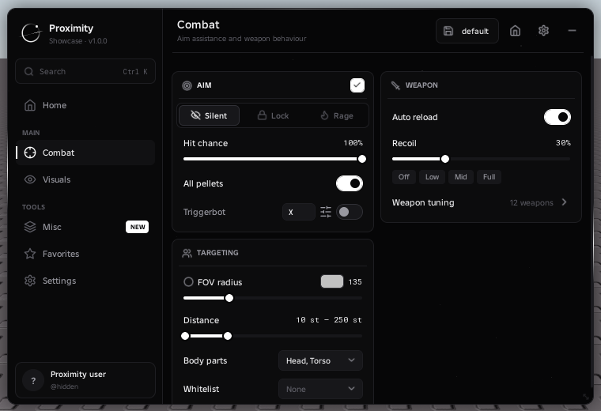
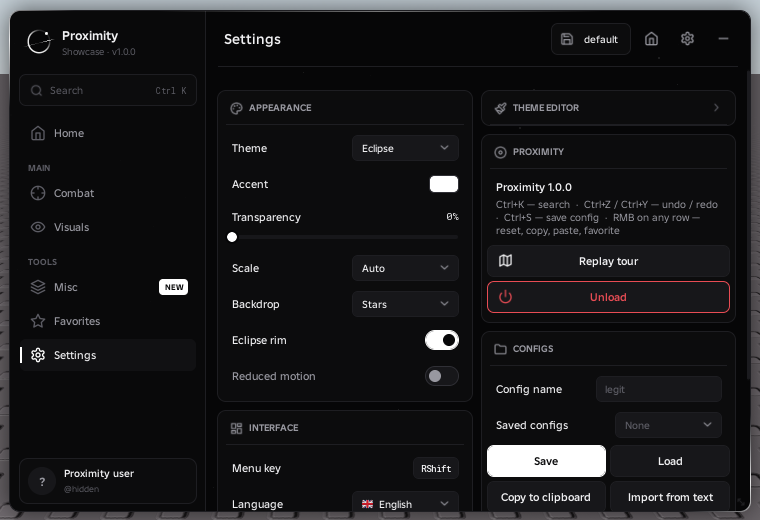
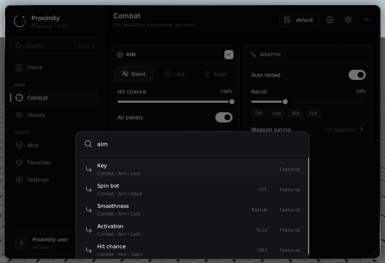

Community
What is new, what comes next, and how to make Proximity yours: themes, plugins, a ready hub to start from and guides for moving over from other libraries.
News

1.3.0 - a key for anything
Right-click any element to give it a key, type an exact value or open its options. 86 own icons, gallery cards, sounds, tool widgets, a phone tab bar, and an unload that takes back everything your script changed.

1.2.8 - springs
Every menu animation now runs on a physical spring, and twelve styles turn around smoothly when you press the key mid-way.

1.2.7 - new loading screens
Orbit, Eclipse, Constellation and Terminal join the planet. Each one shows real progress and the time left.

1.1 - search everything
Ctrl + K jumps to any feature, tab or action and forgives typos and the wrong keyboard layout.
Roadmap
What we are working on. Ideas move between columns as they get done; vote on them with a 👍 in issues.
1.3.x
- Short videos of every animation on the site and in the README
- Matching screenshots for every element
- More executors tested by hand
1.4
- A theme gallery inside the menu with themes shared by players
- Plugin list you can browse from Settings
- A page per element on the site with a live preview
- Try Lua in the browser before running it in Roblox
Ideas
- A demo place where you can try the menu without an executor
- A Discord bot that answers API questions
- Drag-and-drop layouts that export straight to code
Themes
Ten themes ship with the library. Click one to copy the line that turns it on. Made your own in the theme editor? Share it: Settings → Theme editor → Export gives a text you can post.
theme label and a screenshot. The themes players like most get added to the library under your name in the next release.Plugins
A plugin is a function or a table with Init. It gets the library and can add elements, themes, commands or widgets. Players load it with one line.
-- my-plugin.lua
return {
Name = "Rating",
Init = function(Proximity)
Proximity:AddTheme("Ember", { Accent = "#FFB38A", Text = "#FFF4EC" })
local Rating = Proximity.Base.extend("Rating")
-- ... see the Extending section in the API reference
Proximity:Element("Rating", Rating)
end,
}
-- in a hub
Proximity:Use(loadstring(game:HttpGet("https://example.com/my-plugin.lua"))())Share a plugin by opening an issue with the plugin label: a link to the code, what it adds and a screenshot. Good ones get listed here. Only load plugins from people you trust - a plugin runs with the same rights as your script.
Hub template
A complete hub to copy and fill in: a home tab, player and visual features written so unload takes everything back, a rejoin button and full settings. Read the comments at the top, rename it and start adding your features.
Moving over
Proximity reads the option names of other libraries, so most scripts move over by changing the loader and putting elements into sections. Step by step guides with a table for each call:
- Swap the loadstring for the Proximity one.
- Rename the window and tab calls with the table for your library.
- Put elements into a section:
Tab:Section("Main"). - Delete your config and theme managers -
Window:SettingsTab()has both.
Showcase
Hubs built with Proximity will be listed here. Made one? Open an issue with the showcase label: the hub name, what game it is for, a screenshot and a link where players can get it. We only list hubs that keep the loadstring public.